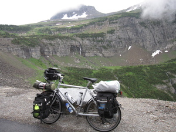

-
I am an Assistant Professor in the department of Mathematics and Statistics at Cal Poly Pomona.
-
My research interests include
computational algebra & algebraic geometry, combinatorial algorithms, discrete optimization,
machine learning and data science, and data visualization.
-
- Here is my CV.